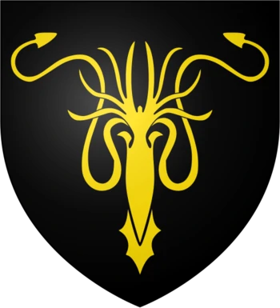
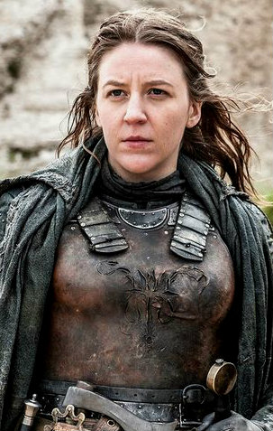
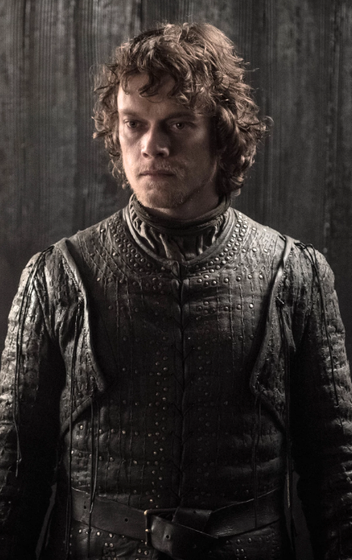

La Casa Greyjoy
La Casa Greyjoy de Pyke es una de las grandes casas de Poniente. Es la principal casa de las Islas del Hierro, un conjunto de islas desoladas en la costa oeste de Poniente. Su asentamiento es Pyke, un castillo situado en la isla del mismo nombre. Su emblema es un kraken de oro sobre campo de sable. Su lema es Nosotros no sembramos.
Yara Greyjoy |

Lady Yara Greyjoy es la Dama de las Islas del Hierro y Lady Reaper de Pyke , la hija y último hijo sobreviviente de Balon Greyjoy , y hermana mayor y único hermano sobreviviente de Theon Greyjoy . Fue criada en Pyke , la fortaleza de la Casa Greyjoy . Yara es una guerrera feroz y comanda su propio drakkar, el Viento Negro . |
Theon Greyjoy |

Theon Greyjoy es el tercer hijo y heredero de Lord Balon Greyjoy y Lady Alannys Harlaw. Tras la Rebelión Greyjoy, Theon fue llevado a Invernalia como pupilo de Lord Eddard Stark para asegurar la lealtad de los Hombres del Hierro. Al servicio del rey Robb Stark, fue enviado a las Islas del Hierro como mensajero, donde se hizo capitán del Zorra Marina. |